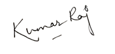

Where Knowledge Meets Compassion!
State President
SEMI West Bengal Chapter
Organizing Chairman, EZECON 2026
With warm Regards,

Dr. Kumar Raj
President, SEMI West Bengal
Chapter Organizing Chairman, EZECON 2026
The 5th EZECON (East Zone Emergency Medicine Conference) 2026 & 8th Bengal EM Conclave is the flagship annual academic event of the Society for Emergency Medicine India (SEMI) — West Bengal Chapter.
Designed to bring together emergency and critical care professionals from across Eastern India and beyond on a single focused platform, EZECON offers unmatched opportunities for learning, collaboration, and exchange of ideas.
Following the massive success of EZECON 2025, which recorded more than 450 delegate registrations and featured expert faculty from across India and the United Kingdom, the 2026 edition is set to raise the bar for academic excellence in emergency medicine and acute care in the region.
The conference will feature a balanced and practice-oriented scientific programme with national faculty, didactic sessions, pre-conference workshops, oral presentations, quiz, and WBMC credit points, promoting evidence-based discussion and hands-on skill development.
This theme embodies our core belief that outstanding emergency medicine is built on both scientific excellence and human compassion — the two pillars that define a truly great emergency physician.
Key academic highlights of EZECON 2026
Engage with prominent emergency and critical care experts from leading institutes across India.
Focused lectures and interactive clinical panel discussions covering emergency medicine guidelines.
Hands-on skill stations for airway management, ultrasound/POCUS, and emergency procedures.
Showcase research and clinical case series, with recognition for outstanding oral presentations.
Earn official West Bengal Medical Council credit hours for attending the scientific sessions.
Compete and test your quick-thinking clinical skills in the exciting EM quiz bowl.
Practical takeaways tailored for consultants, critical care specialists, and residents.
Collaborate with delegates and EM professionals from Eastern India and neighboring states.
Comprehensive academic scope addressing core emergencies
Airway management, shock resuscitation, severe sepsis, clinical toxicology, and critical bedside decision making.
Cardiac, respiratory, renal, gastrointestinal, neurological, and endocrine emergencies in the acute care unit.
Polytrauma assessment, emergency procedural skills, fracture reduction, and bedside procedural ultrasound.
Geriatric emergencies, pediatric resuscitation, obstetric emergencies, and gynecological acute care.
Artificial Intelligence in emergency care, modern digital health tools, point-of-care diagnostics, and future trends.
Emergency Department operations, leadership, quality improvement, workflow optimization, and emergency care pathways.
The Society for Emergency Medicine India (SEMI) — West Bengal Chapter is the state-level chapter of India's apex body for Emergency Medicine professionals. SEMI is dedicated to advancing the specialty of Emergency Medicine through education, advocacy, research, and clinical excellence.
The West Bengal Chapter organizes regular CME programs, workshops, and the flagship annual EZECON conference to bring together EM practitioners, trainees, and allied health professionals across the state and the broader East Zone.